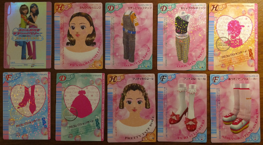
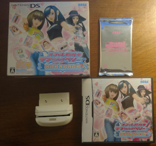
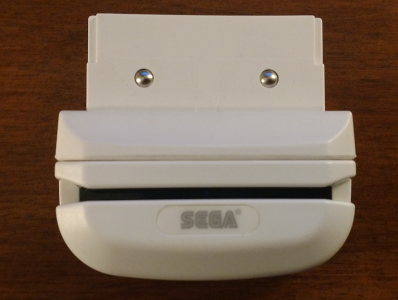
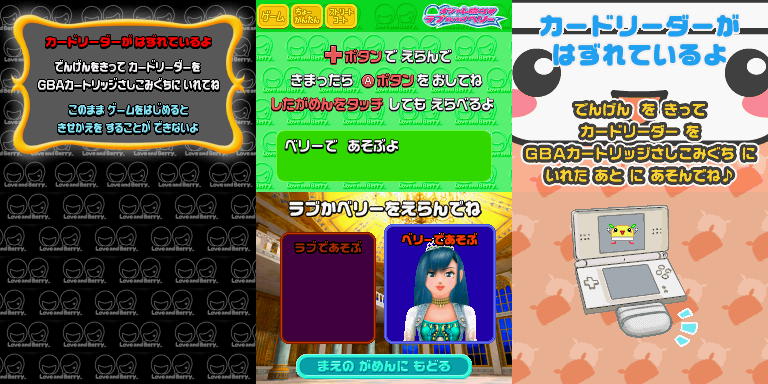
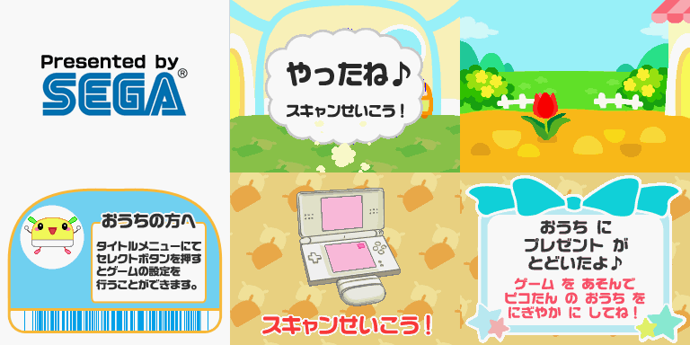
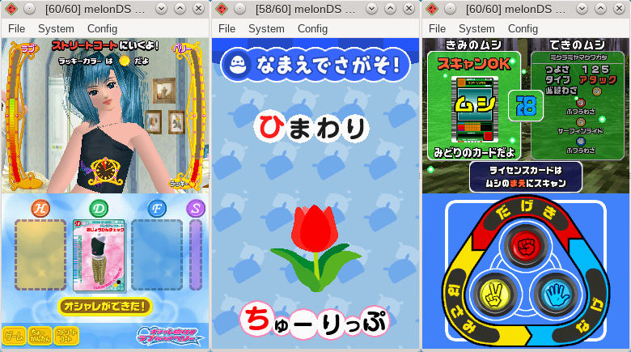

Greed is good
When it comes to emulation, I am a greedy person. Growing up in the early 2000s, I saw technology rapidly change with the advent of 6th Generation consoles. 3D graphics took massive steps towards becoming more "modern", moving away from the harsh low-poly era of the 5th Generation. Seeing this incredible evolution first-hand inspired me to look at the past 2D generations. Metroid Prime, for example, introduced me to the franchise and made me want to know more about the NES and SNES games (I did just that by unlocking the first Metroid game hidden in Prime). I've always viewed emulation as an essential tool that allows people to experience older games. As a kid, I naively thought it was already possible to emulate everything on so-called "retro" consoles. I believed that people smarter than me had researched all there was to know. Years later, I found out this was not the case, and it always bothered me that there were gaps in video game emulation. I wanted to play a console's entire library with no exceptions.
Even before I started developing emulators, I've had this uncompromising desire to emulate everything. Full stop. I won't be completely satisfied until I have it all. Because of that, I have expanded my efforts beyond the Game Boy and into the Nintendo DS. Previously, I avoided the NDS because GBE+ did not run many commercial games well. Ever since last December, the situation has changed, and compatibility has increased dramatically. I can now reasonably boot stuff without expecting my computer to explode. As such, I dove into the world of Slot-2 accessories, extra hardware that fit into the GBA slot of an NDS. There is plenty of unexplored territory here waiting to be emulated, preserved, and above all played and enjoyed.
In 2006, Sega released a special add-on for one of their DS titles. Bundled with the game Oshare Majo Love and Berry: DS Collection was a small, white card scanner simply called "Card Reader". The Card Reader, also known by its model number "HCV-1000", allowed players to swipe barcodes while playing on their NDS in a very similar manner to Nintendo's own e-Reader. Oshare Majo was actually a port of a Sega arcade game of the same franchise, which also used cards. In both cases, the cards dress up the two main characters (hair, shoes, clothing) to earn a higher fashion score after playing a rhythm game. The HCV-1000 saw support from two other NDS games as well: Kouchuu Ouja Mushiking Super Collection (a beetle battling game) and Card de Asobu! Hajimete no DS (a child-friendly educational game).
While the HCV-1000 is not necessary for Oshare Majo or Mushiking, it does add a lot of depth that is otherwise missing. Thanks to the use of cards, both games share a connection with their arcade counterparts. Card de Asobu, however, is completely unplayable unless it detects an HCV-1000. The title screen won't even display without the device plugged in. As such, no one had ever really seen this game running in an emulator. This was the perfect chance to not only break new ground, but preserve something that had been largely forgotten. Even though only a total of 3 games were compatible with the Card Reader, it offered unique gameplay that would be a shame to ignore. With these thoughts in mind, I began investigating yet another barcode scanner.
Raising the bar
The HCV-1000 comes included with every game that supports it. The most widely available package, Oshare Majo, was also the cheapest Complete-In-Box option I could find. Enclosed by a large cardboard box, Oshare Majo has a standard NDS game-case, a smaller white box for the HCV-1000, and set of cards tucked away inside. For game collectors, there is a special version of the Card Reader called the HCV-1001, but this is merely a color variation (pink) as part of a limited edition of Oshare Majo. Both units function exactly the same, however.
  
The first stage of reverse-engineering an NDS Slot-2 device involves "device detection". Anytime a Slot-2 device is inserted, software will run a series of tests to determine if anything really is there, and if so what exactly. Commercial games as well as the NDS firmware itself perform these checks. The whole process is similar to checking for an ID. Once the Slot-2 device is inside the NDS, software will try to read data mapped to the GBA cart ROM. The Slot-2 device isn't really a GBA cart, but it will return certain values when the NDS tries to read that area of memory. Each Slot-2 device is unique and will return a specific pattern or series of bytes. Using that, a game can then determine if the correct accessory is plugged in.
Most games read the same addresses from the GBA cart again and again. It seems that this is probably some function included with the NDS SDK. At any rate, knowing the addresses made it easy to create homebrew to read those locations. To have a more complete understanding of the possible return values, however, the homebrew read a wider range of addresses. With the results, I began to notice something distinct about the retrieved values, that they all followed a certain repeating sequence. After some analysis, I developed a simple formula that modeled the gist of the order. It wasn't a 100% match, as open-bus behavior may "randomly" cause some values to differ, but it was close enough as far as Oshare Majo was concerned. The psuedo-code below describes how to calculate it:
IF ADDRESS AND 1 THEN:
RETURN 0xFD
ELSE:
RETURN 0xF0 OR ((ADDRESS AND 0x1F) SHIFT RIGHT 1)
Implementing the above made Oshare Majo believe an HCV-1000 was attached to GBE+. Instead of showing a brief warning about the missing accessory when booting, the game immediately displays a few logos and goes to the title screen. This was a small but vital step towards fully emulating the Card Reader. Next, data from the game must be collected as it tries to access the HCV-1000's features. Essentially, GBE+ needs to run the game and log which addresses are read from or written to. The problem here was that while GBE+ could boot Oshare Majo and go in-game through many of the menus, it froze when actually trying to play the rhythm minigames. It couldn't actually reach the part where players are supposed to scan their cards. To go that far required work on the GXFIFO and GX status bits for the 3D engine, something that I hadn't touched yet. I planned to revisit that eventually, but being rather impatient in the meantime, I tried another game, Card de Asobu. As Card de Asobu is 2D game, I was hoping it wouldn't require too much from the NDS 3D engine beyond drawing textured quads.

If no HCV-1000 is detected, Oshare Majo displays a warning. Even with that much emulated GBE+ couldn't get past the character selection screen. Card de Asobu was used as the new test case.
Fortunately, not only did Card de Asobu boot up in GBE+ with no issues, it also offered a fully functional demonstration for kids on how to use the Card Reader. This starts right after the game's logo is displayed and before the title screen becomes available, making it perfect for testing the HCV-1000. One of the first things the software does is write to the memory address 0xA000000. Normally on the NDS, this region is dedicated to SRAM/FRAM/Flash backup saves for a GBA cart. For most Slot-2 devices, however, this area is reserved for various input/output registers used to control the additional hardware. Card de Asobu did the following:
1) Write 0x81 to 0xA000000
2) Read from 0xA000000
3) Read values from 0xA000010 through 0xA00001F
4) Write 0x00 to 0xA000000
It kept repeating this continually, complaining of a scan error all the while. I assumed that 0xA000000 was perhaps a control register, allowing the software to start the scanning process and check its status. To better organize things, I called this register "HCV_CNT". The 16 bytes at 0xA000010::0xA00001F were a bit mysterious, but it made sense to think of them as possibly being some sort of barcode data, so that area was named "HCV_DATA". GBE+ didn't emulate anything about the HCV-1000 besides detection, so the scan error must have been an issue with HCV_CNT, HCV_DATA, or both.
At this point, I had enough information to start poking the hardware directly. The HCV-1000 has a small red LED that activates whenever it begins scanning. The light appeared to be controlled by software somehow, so writing 0x81 to HCV_CNT must have been responsible for this. I quickly wrote some code to test that theory. Alhough this seemed a simple task, many versions of my homebrew programs failed to get any response when writing to HCV_CNT. Finally, after several attempts, the light came on. The problem here was access timings for the GBA slot. The NDS can specify how many cycles it's supposed to take for read/write operations on Slot-2 as well as the PHI pin output clock. Basically, it can configure how fast or slow it sends and receives data when dealing with Slot-2. The HCV-1000 needs very specific settings. My homebrew didn't bother with these timings, and as such, HCV_CNT was completely inaccessible. Once I copied the timings used by Card de Asobu, everything worked as expected.
As it turned out, Bit 0 of HCV_CNT determined whether the LED turned on or off by writing a "1" or a "0" respectively. Writing to Bit 7 signaled for the Card Reader to get ready to scan. It will then patiently wait until a barcode of some sort passes in front of its camera. I wrote additional homebrew tests that watched Bit 7 for any changes while I swiped one of my Oshare Majo cards. When the scan completes, Bit 7 automatically resets to zero. Once that happens, the bytes in HCV_DATA contain an ASCII-encoded string representing the barcode. The HCV-1000 parses the barcode on its own and conveniently exposes the human-readable form. Compatible game software constantly check Bit 7 of HCV_CNT to tell if it's time to read HCV_DATA. To emulate the HCV-1000, all GBE+ had to do was handle HCV_CNT and return the correct bytes when reading HCV_DATA.
While I had cards for Oshare Majo, I had none for Card de Asobu. All an emulator requires, however, is the barcode from the card. Using an image of sufficient resolution, the barcode can be extracted. Card de Asobu is not a particularly well-known game, so even after searching online for pictures of cards, I only found three that were of high enough quality to reliably see the bars. Even then, because of their angle and skew, they took a bit of photo manipulation to be accepted by online barcode readers. Just to be absolutely certain, I also manually calculated one barcode and compared the results. All of the barcodes for Oshare Majo, Mushiking, and Card de Asobu use the Code39 format, although each game evidently uses different lengths. HCV_DATA can hold a maximum of 16 characters, and any unused spaces are filled with the null value 0x5F. Armed with a valid barcode, I forced GBE+ to return that whenever HCV_DATA was read. As a result, Card de Asobu acted as if the player had scanned something, thus allowing the HCV-1000 to be functionally emulated for the first time.

Without hacking or cheating, it was previously impossible to go this far in-game for Card de Asobu.
Bar exam
Card de Asobu still required some basic GXFIFO emulation to run, but once GBE+ finally had a barebones implementation, the game went to the title screen and main menu afterwards. From there, various educational minigames based on the cards can be played. Despite a host of missing graphics, GBE+ completed the card scanning portions just fine, proving my research covered all the fundamental details of how the HCV-1000 worked. I could have stopped at that time, but there were still quite a few remaining unknowns. HCV_CNT contained several status bits whose purpose was not fully clear. I noticed in Card de Asobu that the game checked Bit 6 and returned an error if it was set, thus the HCV-1000 had some kind of flag representing a bad scan. There were other bits flipping in HCV_CNT, however, Card de Asobu ignored them altogether and offered no clues about what they did.
As I tested a few new homebrew programs, I honestly couldn't figure out what was going on. Bits 1, 4, and 5 all changed, but there didn't seem to be any real pattern. A good friend of mine pointed me to an old blog by a Japanese hacker known as HKHacker. They had done some research of their own a decade before me. Apparently they'd already documented the problem about using the right access timings on the HCV-1000, device detection, and the Code39 format of the barcodes. While my efforts duplicated their work, it's actually very important for two people to independently come to the same conclusion in cases like this. It means that what we discovered is both credible and reproducible. While HKHacker had no information about HCV_DATA, they observed that Bit 1 of HCV_CNT represented whether the camera had recently captured a line or a gap in the barcode.
I quickly assembled a homebrew test that counted any changes to Bit 1 when scanning a card. The number of transitions did in fact match the total number of lines and gaps from the barcode. I was able to definitely say that a "1" indicates a gap, while a "0" indicates a line. HKHacker suggested measuring these transitions manually to get an idea of what the incoming barcode looks like, similar in some way to the scanner from Barcode Taisen Bardigun on the GBC. While that's one possible approach, as I pointed out earlier, the HCV-1000 will automatically convert the barcode into useable data and will even alert software when it's ready. At any rate, I personally confirmed HKHacks notes on Bit 1, and we now know for sure what it does.
Bit 5 became less mysterious as I kept swiping the card back and forth. Curiously, scanning a card in a specific direction (left-to-right, or right-to-left) produced consistent values for the bit. While this may seem odd, it makes perfect sense in a barcode scanner. Consider a barcode could be read forwards or backwards depending on how it moves in front of the camera. Some barcode readers will automatically rearrange the result as right-to-left or they may leave it up to software to interpret things on its own. The HCV-1000 is in the latter category, however, it sets an "orientation flag" as a helpful hint. If the flag is "0", the human-readable form of the barcode is stored normally in HCV_DATA, with the first byte starting at 0xA000010. If the flag is "1", the barcode is stored reversed in HCV_DATA, with the first byte starting at 0xA00001F.
The last bit, Bit 4 was very tricky to figure out. It almost always got set, and when it didn't there were no obvious signs why. It was only after swiping cards in various ways - such as only going halfway or at an angle - and after swiping cards with no barcodes that I realized the purpose of Bit 4. The HCV-1000 will only set this bit once barcode processing has begun. In other words, the HCV-1000 signals when it has detected a valid Code39 character in barcode form. Bit 1 changes when the camera detects bars and gaps, but that does not necessarily mean it has found a barcode. While Bit 4 indicates the start of a barcode, it will not indicate the end of one. Once set, it stays set until reset by software. Only Bit 7 can determine whether or not the HCV-1000 is actually finished reading.
Bar none
With all of the mechanisms behind the HCV-1000 fully researched, mission accomplished, right? Unfortunately, the status of NDS emulation in GBE+ is still very much a work-in-progress. Mushiking doesn't boot, Oshare Majo doesn't reach the part that uses the Card Reader, and while Card de Asobu is technically the most playable example, it's missing a lot of graphical effects. Although GBE+ can emulate the HCV-1000, it's not the best NDS emulator to demonstrate how it works. I am motivated to boost GBE+'s compatibility, however, in the meantime I think other emulators should benefit from the information I gathered. Ego and pride have no place when it comes to video game preservation, rather we should value sharing and cooperation. To that end, I've been working on an experimental branch of melonDS that adds functional support for the HCV-1000. With any luck, perhaps it can be merged, or at the very least it can serve as an example to a better implementation in the future. As always, everything I've documented can be found on Dan Docs as information available free to all (public domain). Anyone can come along and add it to their own emulator or an existing project like Desmume.
Apparently I suck at rhythm games and have no sense of fashion.

melonDS is an amazing emulator. With just a bit a coding, the HCV-1000 functions properly with all three compatible games
Drawing the next card
That concludes the Sega Card Reader. This is the third time I've had to deal with peripherals that scan cards, and it certainly won't be the last. Although the HCV-1000 was only used in 3 NDS games, it remains a fascinating example of Sega's age-old ingenuity. Barcodes are a simple way of storing information, and cards allow a game to expand the more players collect. Cards also bridged the arcade versions with the portable console versions. It's rare to see other examples where an accessory worked like that (Rockman EXE Battle Chip Stadium and F-Zero AX come to mind). While the Sega Card Reader didn't see widespread usage, it's arguably one of the better designed barcode readers used for a video game. From a hardware and software point of view, it's operation is much smoother than either the Barcode Boy or the reader from Barcode Taisen Bardigun.
Even as obscure as it is, there are people out there interested in HCV-1000 emulation. Now we can put another mystery to rest, for the most part. Preserving the hardware is only Step #1, however. There are hundreds of cards out there waiting to be scanned. I only managed to extract a handful of barcodes, and there are plenty more that need to be put in a database of some sort. Thankfully a colleague of mine purchased and scanned a full set for Card de Asobu, so at least one game is covered at the moment. These ongoing efforts will take quite some time to finish and serve as an important reminder that the task isn't really complete until every last bit of data is recorded.
Speaking of jobs, mine is far from done. There are still plenty of uncharted regions left. Many unknowns continue to haunt us, secrets that have been buried inside video games for years. Case in point, those pesky Game Boy-powered sewing machines. It's been two decades since they were manufactured and retailed, yet we have had little insight on how these things really worked. Hopefully that will change this year, and soon. What better way to celebrate their 20th anniversary than emulation? It will take some time and determination, but with any luck I'll have finally cracked them.